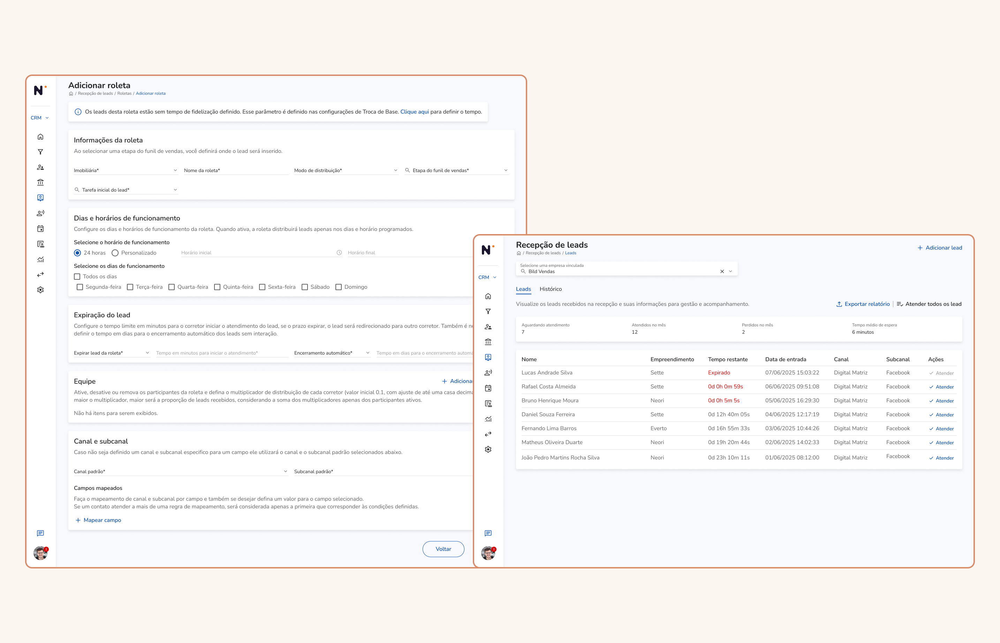
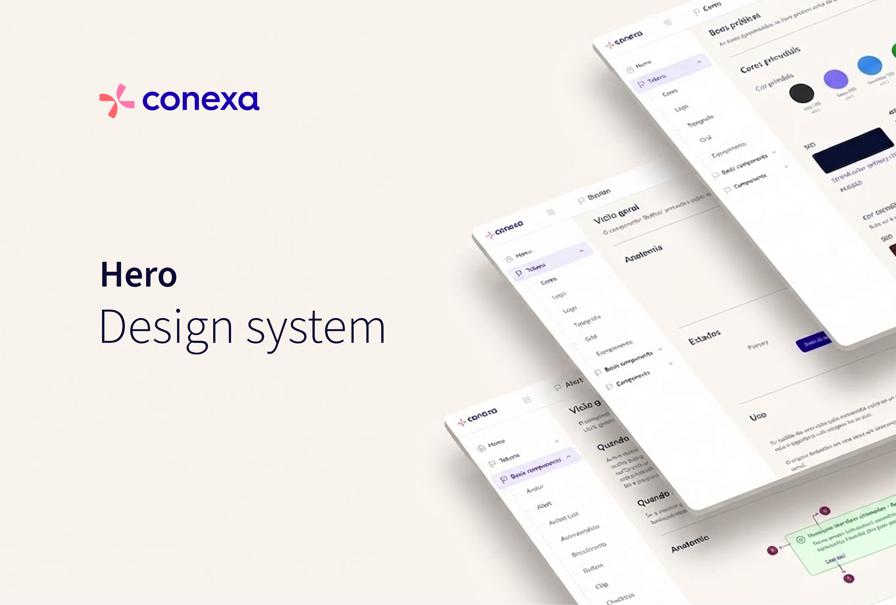
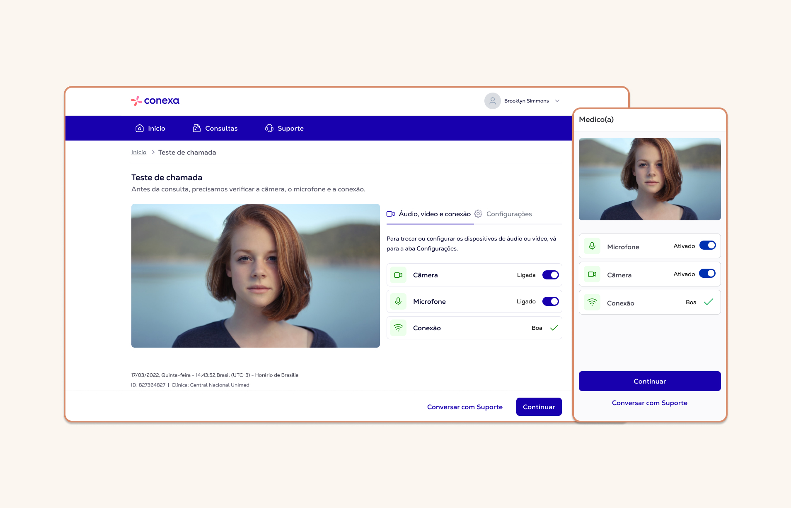
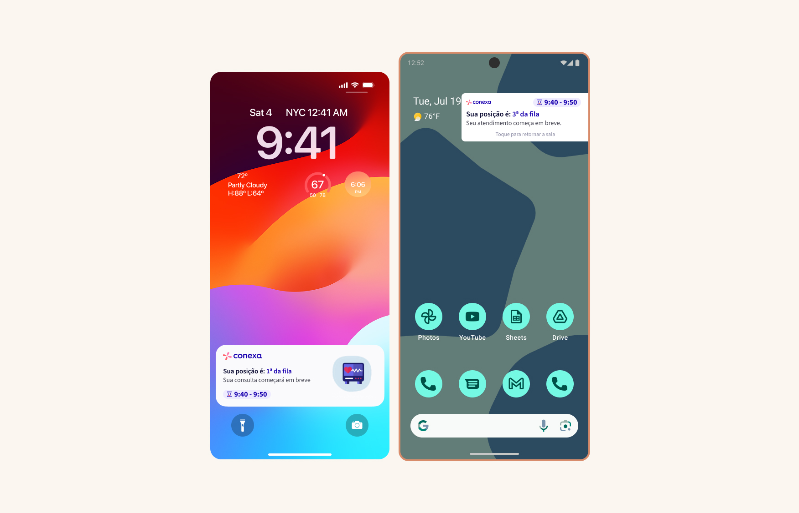
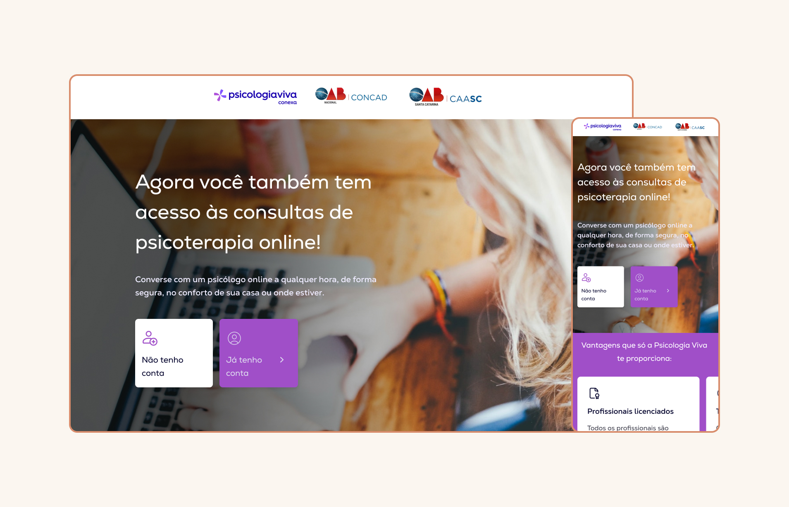
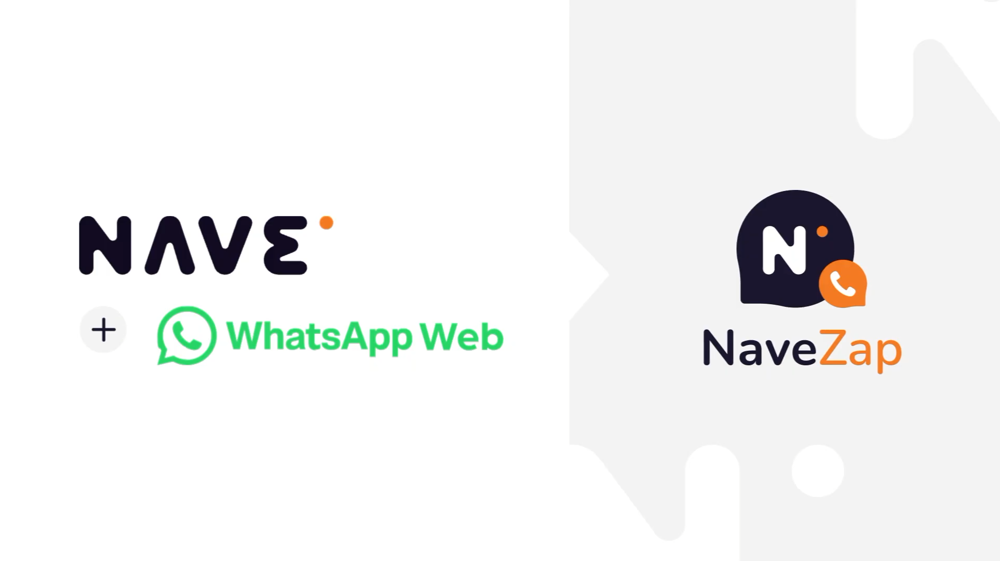

Roleta Automática — Bild/Vitta
Silos de dados travavam o time de vendas em ferramentas paralelas. Desenhei a arquitetura de roteamento que unificou a captação de leads e eliminou o retrabalho.
Oba, sou o Gabriel, espero que esteja bem!
Há 6 anos atuando em produtos digitais para sistemas corporativos complexos, fintechs e health techs. Do discovery ao delivery, sempre pensando nas pessoas — menos ruído, mais decisões claras.

Silos de dados travavam o time de vendas em ferramentas paralelas. Desenhei a arquitetura de roteamento que unificou a captação de leads e eliminou o retrabalho.

Um Design System fragmentado inflava o tempo de desenvolvimento em até uma sprint. Liderei sua evolução para multi-marca, injetando acessibilidade WCAG AA na fundação.

Falhas de áudio e vídeo geravam faltas em consultas de telemedicina. Analisei entrevistas com pacientes e dados de suporte para desenhar um fluxo de validação técnica que reduziu chamados em até 98%.

Pacientes perdiam o timing certo de suas consultas ao sair do app. Conduzi um benchmarking e prototipei notificações ricas para iOS e Android, mantendo o paciente informado mesmo fora da plataforma.

Uma parceria institucional (CAASC) precisava de uma página de onboarding sob prazo apertado. Desenhei, do conceito ao handoff, aplicando os tokens do Hero Design System que eu mesmo estruturei.

Corretores perdiam tempo alternando entre WhatsApp e a plataforma para checar dados do lead. Idealizei e desenhei, em conversa constante com devs e PM, uma extensão com atalhos e dados do cliente direto no fluxo de atendimento.
Gabriel Dias — UX/UI Designer e Product Designer há mais de 6 anos, formando em Análise e Desenvolvimento de Sistemas. Atuo no ciclo completo de design, do discovery ao delivery, com foco em sistemas corporativos complexos, health techs e fintechs.
Conduzo pesquisas com usuários, mapeio jornadas e analiso funis de conversão para transformar dado em decisão de produto — sempre equilibrando as necessidades de quem usa com os objetivos do negócio. Meu diferencial é a proficiência em front-end, que garante handoffs eficientes e viabilidade técnica desde o desenho. Já geri a criação e evolução de Design Systems corporativos, além de fluxos e produtos novos construídos do zero.
Ao longo da carreira, colaborei com empresas como Conexa, Psicologia Viva, Bild Desenvolvimento Imobiliário, Caixa Econômica Federal e Banco da Amazônia — de startups de crescimento rápido a grandes corporações.
“O Gabriel possui um perfil tranquilo e organizado, demonstrando consistência na forma como estrutura problemas e conduz soluções. Está sempre em busca de aprendizado, que reflete na evolução constante do seu trabalho.
Tem forte orientação a design centrado no usuário, com atenção especial à acessibilidade e usabilidade. Consegue equilibrar estética e funcionalidade, criando interfaces intuitivas e experiências que realmente fazem sentido para as pessoas.
Seu compromisso em entender o usuário e traduzir necessidades em produtos eficientes é um dos seus principais diferenciais.”
“Tive a oportunidade de trabalhar com o Gabriel em projetos de UX/UI e foi uma experiência muito positiva. É um profissional técnico, colaborativo e muito comprometido com a entrega de soluções bem pensadas, funcionais e centradas no usuário. Sua atuação sempre foi marcada por responsabilidade, boa comunicação e foco em resultados.”
“Tive a oportunidade de trabalhar com o Gabriel na mesma squad e posso destacar com segurança a consistência e maturidade que ele traz para o processo de design. Ele não apenas desenha interfaces, mas estrutura jornadas completas com clareza, antecipando cenários e garantindo uma experiência coesa para o usuário. É um profissional que agrega muito valor ao time, tanto pela execução quanto pela capacidade de contribuir estrategicamente nas soluções.”